Kept exposes parsed dates; HomeSurvey lists items found in video. Less entry still leaves a review step.
[S01] [S26]AI PRODUCT DAILY / 2026-10-25
One sentence, then the next few clicks
Task capture, browser game creation and desktop agents, alongside moving surveys, robot mapping and editable 3D scenes.
October 25, 2026 · Morning edition
Explore today’s signals →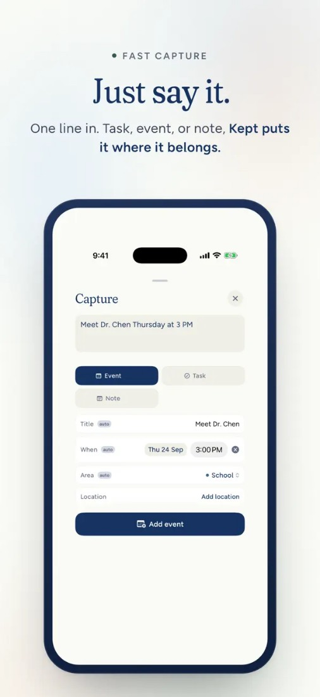
AI PRODUCT DAILY / 2026-10-25Cutoff 04:04:45 Toronto / 08:04:45 UTC
Interactions worth exploring today
Game rules, 3D object positions and image-style weights offer different ways to revise a result.
[S05] [S88] [S86]Conversation caches, citations and approval results determine what an agent retains when work resumes.
[S62] [S70] [S74]- 01Kept shows how it parsed a thought before putting it on your dayKept 1.9.9 · Consumer app update
- 02myPip lets friends build, revise and play the same game togethermyPip · Consumer product · PH discovery
- 03sideOS adds local vision choices for pointing at work on your MacsideOS 0.9.8 · Product update
- 04Bloblings restores missing Codex chats and puts child runs under their parentBloblings 1.0.27 · Personal utility update · Seven-day lookback
- 05AgentValley gives waiting agents distinct voices and a choice of displayAgentValley 0.3 · Open-source update · Mac utility
- 06NoteBear links recordings to people, projects and earlier decisions红熊AI 笔记熊 / NoteBear · Product · recording hardware and cloud memory
- 07HomeSurvey turns a glasses walkthrough into an editable moving inventoryHomeSurvey.ai onsite glasses survey · Hardware/software workflow · onsite surveys
- 08Microduck uses 64 depth readings to find itself after being carriedMicroduck · Hardware and open software · engineering update
- 09Axon Body 5 Pro adds a close-focus camera for document checksAxon Body 5 / Pro · Integrated hardware and software · product announcement
- 10Digit 5 brings compute and safety monitoring onboardDigit 5 · Robotics · architecture update
- 11Gemini apps can become Google Sites drafts; later updates remain an open questionGemini / Google Sites · Product update · official announcement and community reaction
- 12Basedash sends the underlying rows with its recurring analysisBasedash scheduled CSV exports · Product update
- 13Dify lets agents choose a branch and packages their supporting filesDify 1.18.0 · Developer-tool update
- 14Kimi K3.1 Pro keeps tool context intact across a long taskKimi K3.1 Pro API · Product / API · official documentation
- 15capy-flash restores longer disk caches after a restartcapy-flash 0.7.4–0.7.5 · Developer-tool update
- 16ADK separates speech stages and trims interrupted playback historyGoogle ADK Python 2.13.0 · Developer-tool update
- 17Pydantic AI attaches citations to answer spans and preserves them through the UIPydantic AI 2.61.0 · Developer-tool update
- 18Agent Framework makes session ownership explicit and preserves queued approvalsMicrosoft Agent Framework Python 1.23.0 · Developer-tool update
- 19LangGraph assigns thread priority through application policyLangGraph SDK Priority beta · Developer-tool update
- 20Vercel AI SDK parses the last final JSON without discarding earlier contentVercel AI SDK 7.0.153 · Developer-tool update
- 21HimmBO screens styles before spending generations on adapter mixturesHimmBO · Paper / research prototype
- 22GALA uses object geometry to place things inside and beneath furnitureGALA · Paper / research prototype
- 23WorldStream builds ahead of the player and remembers edited placesWorldStream · Paper / research prototype
- 24RLMuscle derives muscle activation from a reference motion clipRLMuscle · Paper / research prototype
- 25TutorCaseBench checks how AI responds when students resist or disengageTutorCaseBench · Paper / research prototype
- 26Contestable Agents lets engineers challenge evidence before classifying a fieldContestable Agents · Paper / research prototype
- 27A gaze-aware assistant can carry an old misinterpretation into its next alertWhen Interpretations Persist · Paper / research prototype
AI PRODUCT DAILY / 2026-10-25Consumer app update · 2026-10-24 · 3-day / see date limits
Kept shows how it parsed a thought before putting it on your day
Kept turns a quick thought into a task, event or note for iPhone users who otherwise keep entering the same information in separate lists.
Enter a sentence, inspect its title, date and time, then save. Switching to a note retains the words rather than discarding them.
Version 1.9.9 steadies the daily Top 3, exposes note-filing changes for review and undo, and improves side-by-side planning layouts.
Plans await approval. On-device parsing, cloud sync and optional cloud AI are separate processing paths. Overnight filing has its own preference, and a visible change log helps recover an earlier organization.
Product perspective
Free to start; complete pricing remains unverified. The preview matters because a quicker entry can still contain a misunderstood date.
AI PRODUCT DAILY / 2026-10-25Consumer product · PH discovery · 2026-10-24 · 3-day / see date limits
myPip lets friends build, revise and play the same game together
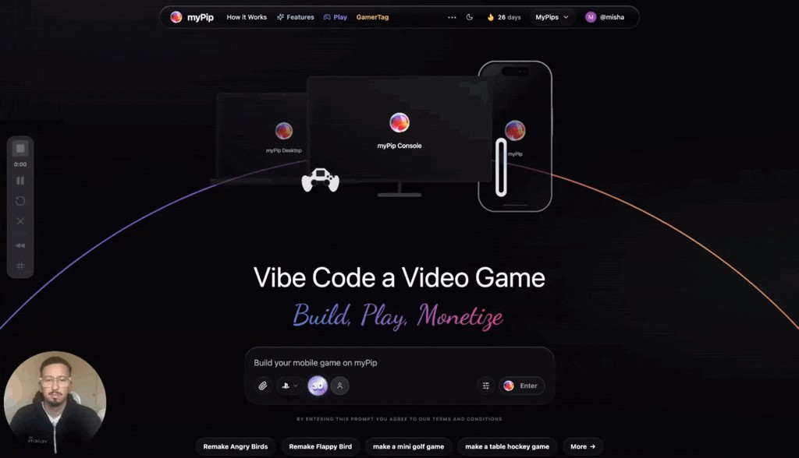
myPip lets people without game-engine experience describe a playable game and revise its rules in words.
The maker describes a shared creation lobby where friends change characters, physics or levels while another person playtests. Generated games also support multiplayer.
The October 24 PH appearance highlights Hive coding, controller input and scanning people into characters. Individual feature launch times remain unverified.
The readable official shell offers a free starting point, but full pricing and export terms were unavailable. Revenue and creation-speed claims were not independently tested.
Product perspective
It suits trying a small game with friends; conflicting changes, win conditions and touch controls still need checking before release. Phone touch and controller input need separate checks; export, paid allowances and collaborative recovery remain unresolved.
AI PRODUCT DAILY / 2026-10-25Product update · 2026-10-24 · 3-day / see date limits
sideOS adds local vision choices for pointing at work on your Mac
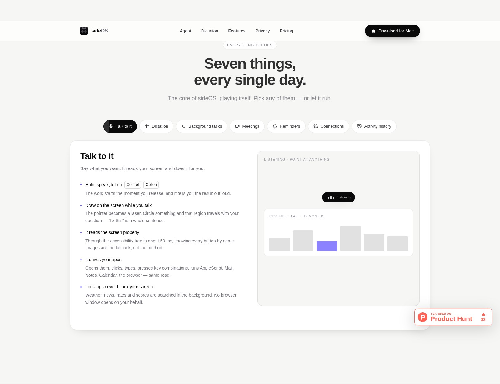
sideOS 0.9.8 gives Mac users more local models, including additional choices that can inspect images.
Hold Control–Option, speak and optionally frame a screen region. The assistant reads accessibility information, uses images when needed, then opens apps, clicks or types.
Added Gemma and Ministral models accept screenshots and attachments, extending local handling of visual tasks. This is an update to an existing app.
It requires Apple Silicon and macOS 14. The listed one-time price is $89.90, currency unspecified; cloud usage is separate and licensing periodically checks online.
Product perspective
Local inference does not make every connected service offline. Cloud voices, MCP connections and diagnostic reports have separate data paths. Dictation remains separate from agent execution; model size must suit the machine, and vision support does not establish correct clicks.
AI PRODUCT DAILY / 2026-10-25Personal utility update · Seven-day lookback · 2026-10-20 · 7-day review
Bloblings restores missing Codex chats and puts child runs under their parent
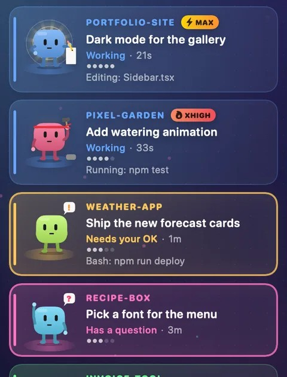
Bloblings represents coding sessions as pets on the Mac, showing work, waiting and completion, with a click back to the thread.
Version 1.0.27, dated October 20, restores projectless Codex chats and nests codex exec runs under the Claude session that started them.
It also fixes waking an idle thread for a note. The subtask change requires rerunning the Codex setup prompt; the PH appearance is not its release date.
The free app requires macOS 15. Pets do not approve requests; answers stay in the original application, and ordinary chats differ from coding sessions.
Product perspective
Local hooks convey state; the underlying model service remains separate. A quiet pet is not proof that the task succeeded. Shared-project edits still need attribution and review.
AI PRODUCT DAILY / 2026-10-25Open-source update · Mac utility · 2026-10-24 · 3-day / see date limits
AgentValley gives waiting agents distinct voices and a choice of display
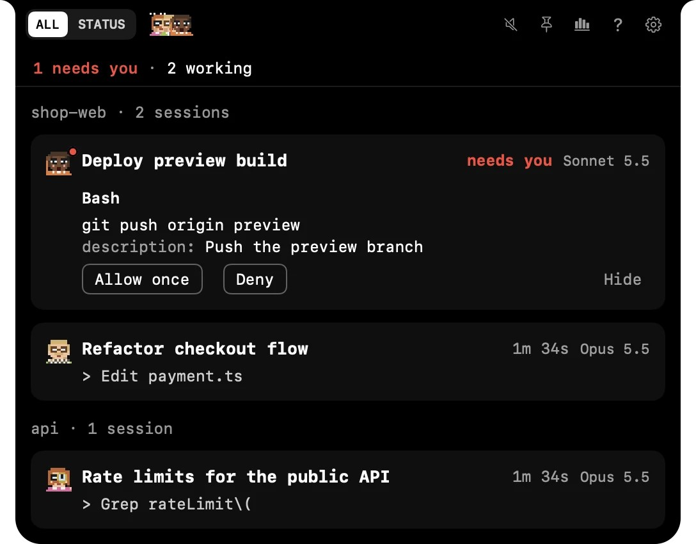
AgentValley puts Claude Code sessions, tasks and pending decisions into a compact Mac panel.
It reads session state, shows characters and subtask rows, and returns you to the relevant terminal when you click a session.
October 24 updates add distinct audible cues for requests and completion, plus a choice of external display. It does not supply a new coding model.
The free MIT-licensed app requires macOS 15. Sounds can be disabled and stop while locked. Answering permission requests requires a separately installed optional plugin.
Product perspective
The maker says container-hosted sessions are unsupported. API-priced usage charts are estimates, not subscription invoices or evidence that the code is correct. Project grouping and separate subagent rows aid navigation, but the display neither reviews code nor resolves execution failures.
AI PRODUCT DAILY / 2026-10-25Product · recording hardware and cloud memory · 2026-10-24 · 3-day / see date limits
NoteBear links recordings to people, projects and earlier decisions
NoteBear combines a recording card, phone app and cloud MemoryBear engine for meetings, interviews and repeated client visits.
It organizes conclusions, reasons and next actions, linking them to people and projects. Questions can return references to the relevant meeting and recording.
A pre-meeting review brings together earlier discussions, changed budgets and unfinished work, reducing the need to reopen separate notes. New information updates earlier conclusions.
The October 24 launch follows a morning event schedule and is treated as a recent supplement. Price, shipping, microphone specifications and complete deletion controls remain unconfirmed. Complete subscription terms are also unresolved.
Product perspective
Useful recall depends on locating the source of a revised decision, rather than merely receiving a fluent summary.
AI PRODUCT DAILY / 2026-10-25Hardware/software workflow · onsite surveys · 2026-10-21/2026-10-24 · 7-day review
HomeSurvey turns a glasses walkthrough into an editable moving inventory

HomeSurvey.ai lets moving-company estimators record rooms through glasses while describing what moves, stays or needs special packing.
Clips reach the paired phone before upload. AI drafts item lists, volume, weight and carton suggestions; reviewers inspect source frames and make corrections.
The new capture route reuses the existing phone-video pipeline, rather than measuring rooms live inside the glasses. Recording frees the hands; upload and quote review remain.
The official IAM launch is a seven-day lookback. The October 24 offer has ended, and glasses and phone surveys subsequently use different credits.
Product perspective
Because the inventory feeds a quote, missing or wrongly excluded items need traceable correction, not merely faster generation. Volume and weight remain estimates requiring review.
AI PRODUCT DAILY / 2026-10-25Hardware and open software · engineering update · 2026-10-23 · 3-day / see date limits
Microduck uses 64 depth readings to find itself after being carried
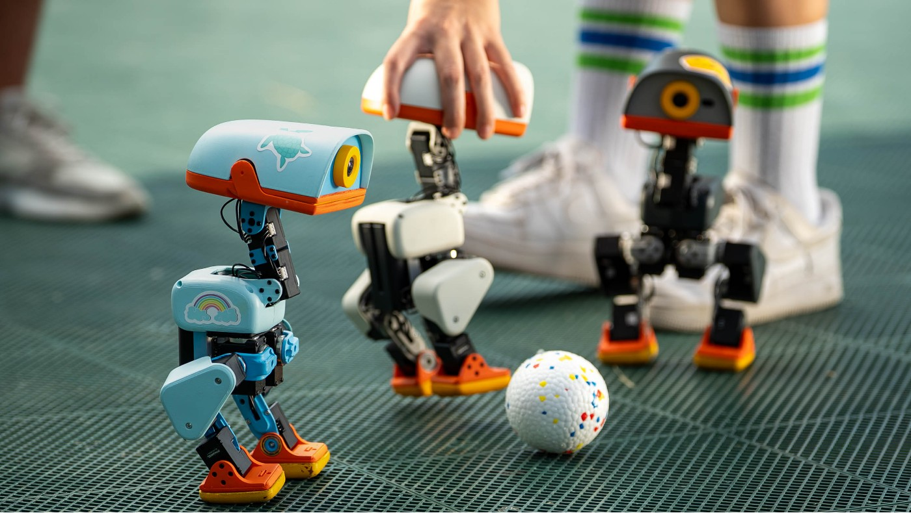
Microduck is a small biped for gamepad play and experiments with trained movement policies.
Its October 23 engineering posts combine leg and inertial measurements with an 8×8 time-of-flight array to locate the robot against a room map.
After being carried, it matches nearby obstacles during stops. Mapping runs onboard; the external camera in the demonstration only measures ground truth.
It currently handles one room. An unfamiliar room can produce a false match, and autonomous exploration remains in development.
Product perspective
This is a technical update to a preorder product. Open software does not include mechanical or electronic designs, and household performance is not established. The public software and recordings give builders material for investigating specific localization errors.
AI PRODUCT DAILY / 2026-10-25Integrated hardware and software · product announcement · 2026-10-24T17:00:00Z · Window observation
Axon Body 5 Pro adds a close-focus camera for document checks
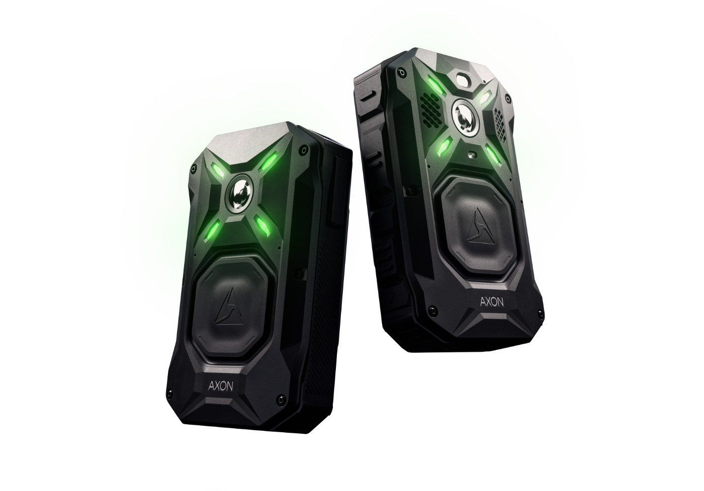
Axon Body 5 Pro adds a dedicated close-focus camera for officers to scan a driver’s license and request a check.
Results appear on the body camera, reducing transcription and trips to the vehicle. Six speakers project translations and assistant responses toward the other person.
During recording, Guardian can flag signs of escalation; a human reviews the livestream and decides whether support is needed.
Announced October 24 at 17:00 UTC, availability is still pending. The scanning lens is a Pro feature; AI-plan access and agency integrations need separate checking.
Product perspective
The saved work is field information handoff. Recognition errors, weak coverage and false alerts still require people; processor multipliers do not establish those outcomes. Existing Body 4 accessories remain compatible; agency data connections still need configuration.
AI PRODUCT DAILY / 2026-10-25Robotics · architecture update · 2026-10-22T11:00:00Z · 3-day / see date limits
Digit 5 brings compute and safety monitoring onboard
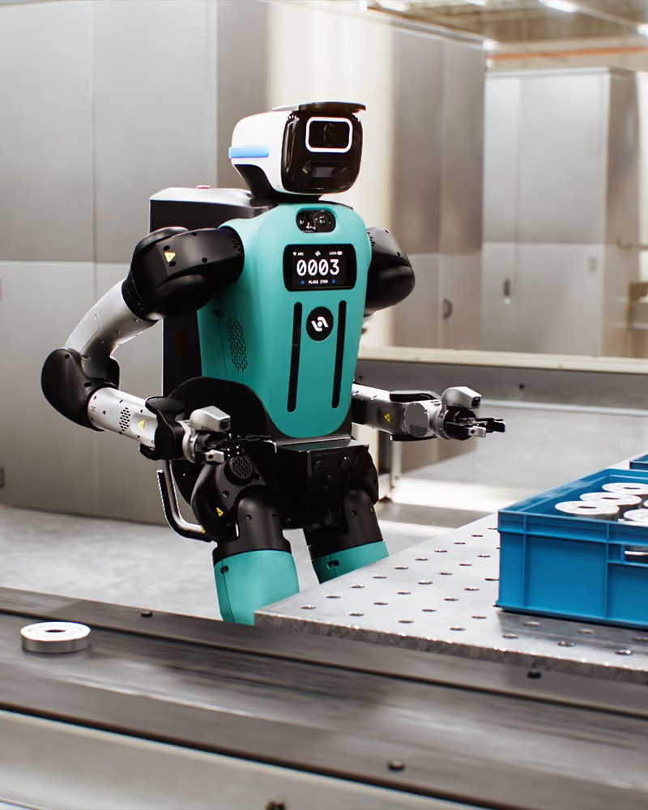
Digit 5 targets factory and warehouse handling; this update explains its onboard compute and safety arrangement.
Arc coordinates work, while the robot perceives and acts locally. A separate safety path checks motion limits without waiting for a cloud response.
Agility plans to standardize the general-availability version on NVIDIA IGX Thor and integrate Halos capabilities with its human-detection system.
The October 22 announcement is a recent supplement. Early access is expected in the first half of 2027; final third-party certification remains ahead.
Product perspective
Fewer external components could simplify a station, but compute consolidation does not remove replenishment, maintenance or exception handling. Human detection and stop rules occupy different layers, whose certification scope still needs clarification.
AI PRODUCT DAILY / 2026-10-25Product update · official announcement and community reaction · 2026-10-19 · 7-day review
Gemini apps can become Google Sites drafts; later updates remain an open question
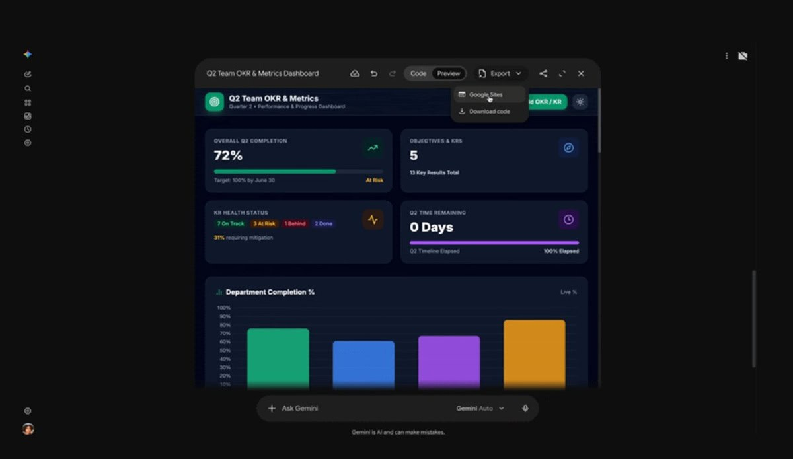
Teachers and small teams can place a Gemini-built quiz, calculator or dashboard on a site others can open.
Choose Export → Google Sites to create a private draft containing the interactive app, then add context, preview and publish.
The October 19 update removes a manual code-transfer step. Later coverage does not make this a new October 23 release.
Existing Sites permissions and organizational policies apply. Publishing, editor access and search visibility remain distinct choices. Google lists web, Android and iOS support for eligible personal and Workspace accounts; creating the draft does not publish it.
Product perspective
Two visible Reddit commenters ask about synchronization and updating the same page; the announcement does not establish either behavior.
AI PRODUCT DAILY / 2026-10-25Product update · 2026-10-24 · 3-day / see date limits
Basedash sends the underlying rows with its recurring analysis
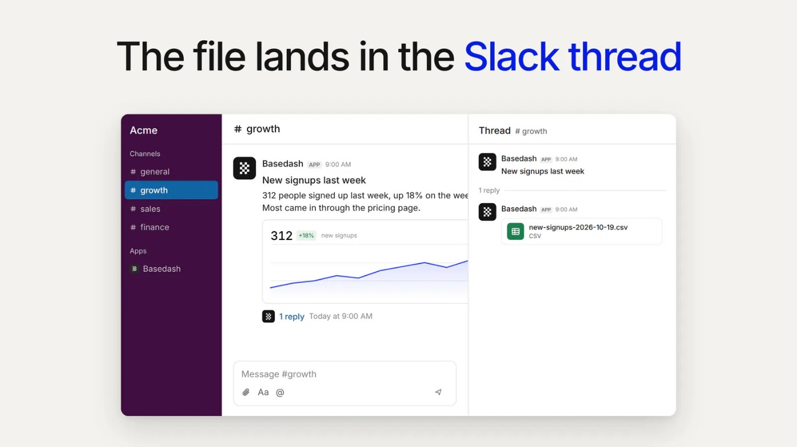
Basedash adds recurring CSV output for operations and finance teams that need to filter, reconcile or reuse the rows behind an analysis.
Users specify the data scope and CSV request in automation instructions. Each AI analysis can deliver the file alongside its findings in Slack or email.
Slack places the file in the message thread; email and run history provide download links, reducing separate manual exports.
Downloads require Basedash access. Slack attachments need an administrator-approved app update, otherwise a link is supplied. Runs consume AI usage. Links expire after thirty days; an overlapping scheduled run is skipped rather than guaranteed delivery.
Product perspective
This adds a usable analysis deliverable without establishing correct metric definitions. Account permissions, query conditions and row counts still need checking.
AI PRODUCT DAILY / 2026-10-25Developer-tool update · 2026-10-23T06:33:50Z · 3-day / see date limits
Dify lets agents choose a branch and packages their supporting files
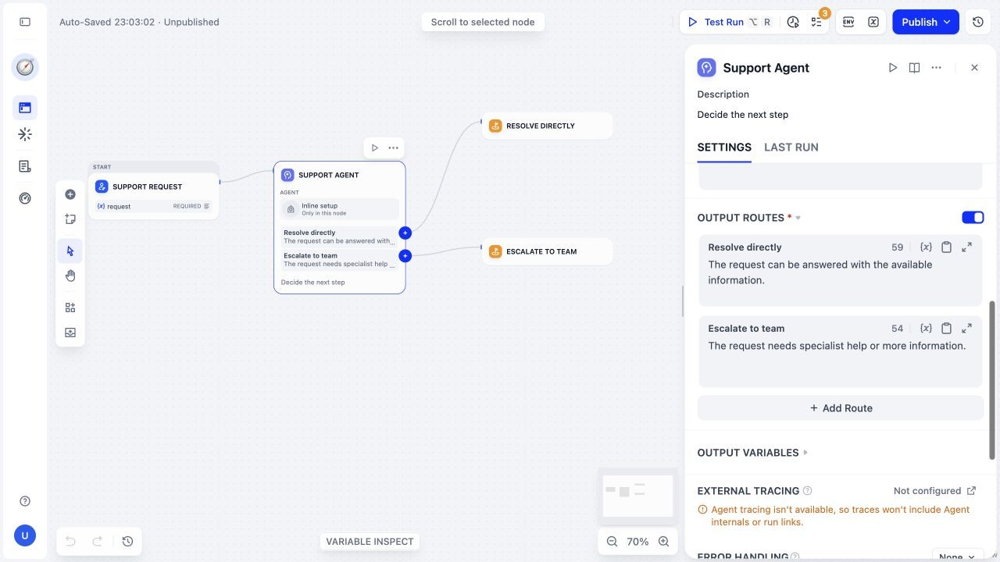
Dify 1.18.0 helps teams building support, approval and document workflows connect an agent’s result directly to the next branch.
Editors enable Output Routes, describe conditions and connect destinations. Run history shows the chosen route and opens the steps inside a child workflow.
The .ifpkg export moves supported agents, skills and files together, recreating their references in the destination workspace instead of requiring separate transfers. Explicit YAML export remains, and missing resources are reported during import.
Routed output remains buffered, nested usage can be approximate, and the optional knowledge-space beta requires a separate service.
Product perspective
Runtime components must be upgraded together. Old agent-specific human forms cannot resume, and a portable package does not guarantee external resources are ready.
AI PRODUCT DAILY / 2026-10-25Product / API · official documentation · 2026-10-23 · 3-day / see date limits
Kimi K3.1 Pro keeps tool context intact across a long task
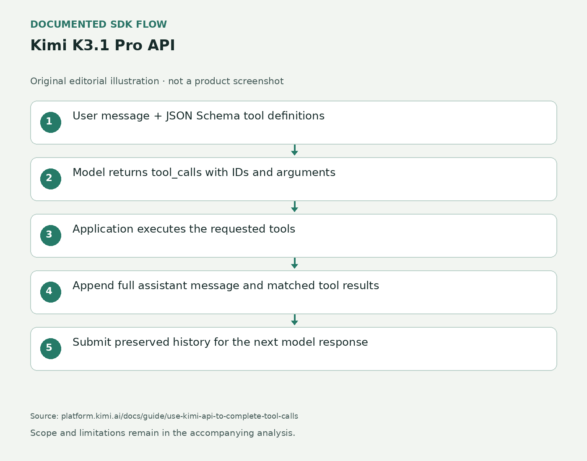
Kimi K3.1 Pro gives developers a million-token context for applications combining documents, code and tools.
Send messages and tool definitions, execute the returned calls, then return the complete assistant message with matching results. Images require files or base64 rather than public URLs.
Reasoning stays enabled, with low, high or max effort. Streaming reasoning and final output are separate, so retaining only visible text loses required state.
A minimum US$1 top-up unlocks access. API usage is separate from Kimi memberships; full weights are planned by November 4. The Highspeed variant’s claimed acceleration has not been independently reproduced here.
Product perspective
Applications still own tool permissions, failed-call recovery and spending controls throughout the continuing task.
AI PRODUCT DAILY / 2026-10-25Developer-tool update · 2026-10-24T21:25:13Z · Window observation
capy-flash restores longer disk caches after a restart
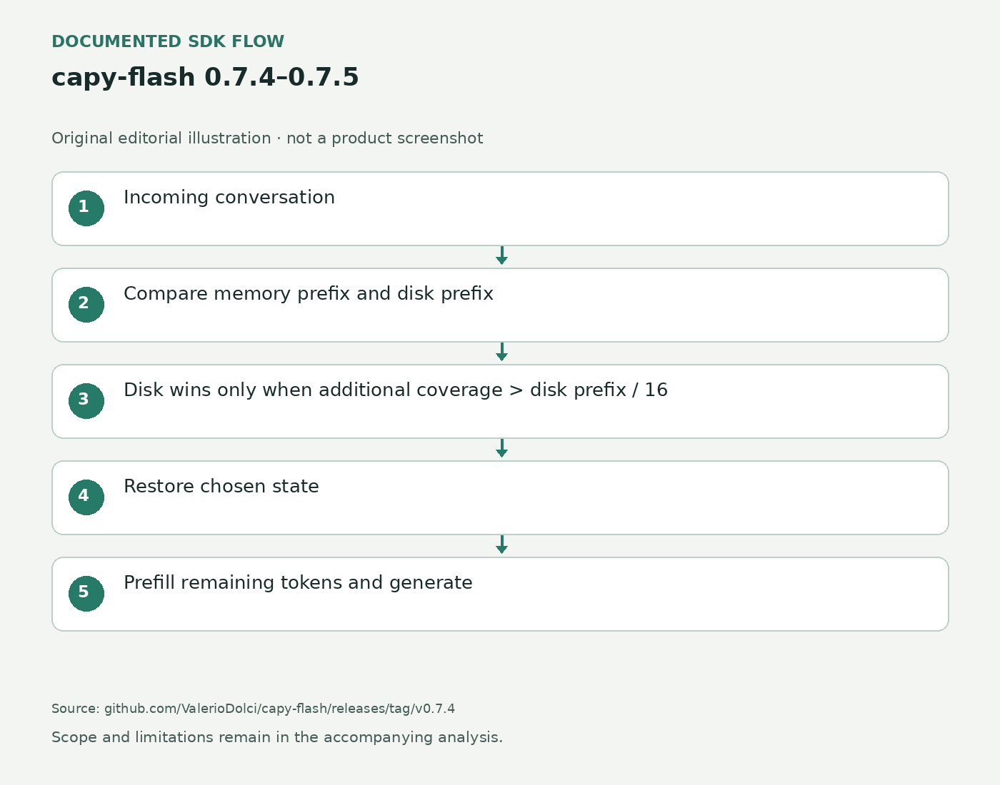
Local coding-agent users can connect compatible clients to capy-flash, which serves supported models on one or two 16 GB RTX 50-series GPUs.
Conversation requests reuse cached prefixes before generating a reply. The server now compares memory and disk matches instead of stopping at the first memory hit.
Version 0.7.4 fixes long-history and single-GPU disk restoration; 0.7.5 adds optional CPU and PCIe calibration for splitting missed experts.
API keys can come from a file, and a second server cannot silently share the port. Calibration remains off by default. Published packages target Linux and specified GPUs; Flash-Next also requires substantial host RAM.
Product perspective
The reported recovery gain concerns a specific 31k-token conversation. Memory requirements, drivers and quantization quality still constrain adoption.
AI PRODUCT DAILY / 2026-10-25Developer-tool update · 2026-10-23T18:08:23Z · 3-day / see date limits
ADK separates speech stages and trims interrupted playback history
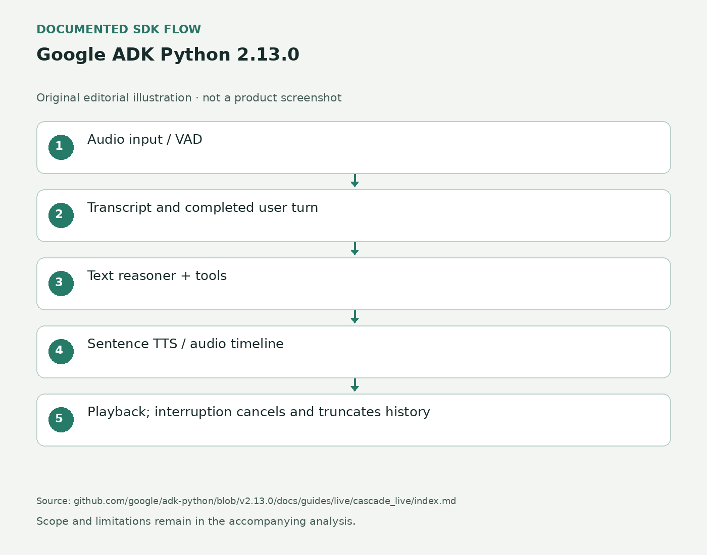
ADK 2.13.0 adds interruption handling to CascadeLive and Gemini speech recognition and synthesis components for developers building voice agents.
Audio becomes text, a normal language model reasons and calls tools, and sentence segments become speech. Applications can inspect the intermediate text. Non-live calls bypass speech stages and reuse the same text model and tools.
When the user speaks, the connection cancels reasoning and synthesis, tells the client to stop playback and trims history against the audio timeline.
The staged path adds latency and loses vocal nuance. Without echo cancellation, the agent’s own speech can trigger a false interruption.
Product perspective
Speech during a tool call retains a documented ordering failure. A separate typed classifier node routes tasks but remains experimental.
AI PRODUCT DAILY / 2026-10-25Developer-tool update · 2026-10-24T03:13:40Z · 3-day / see date limits
Pydantic AI attaches citations to answer spans and preserves them through the UI
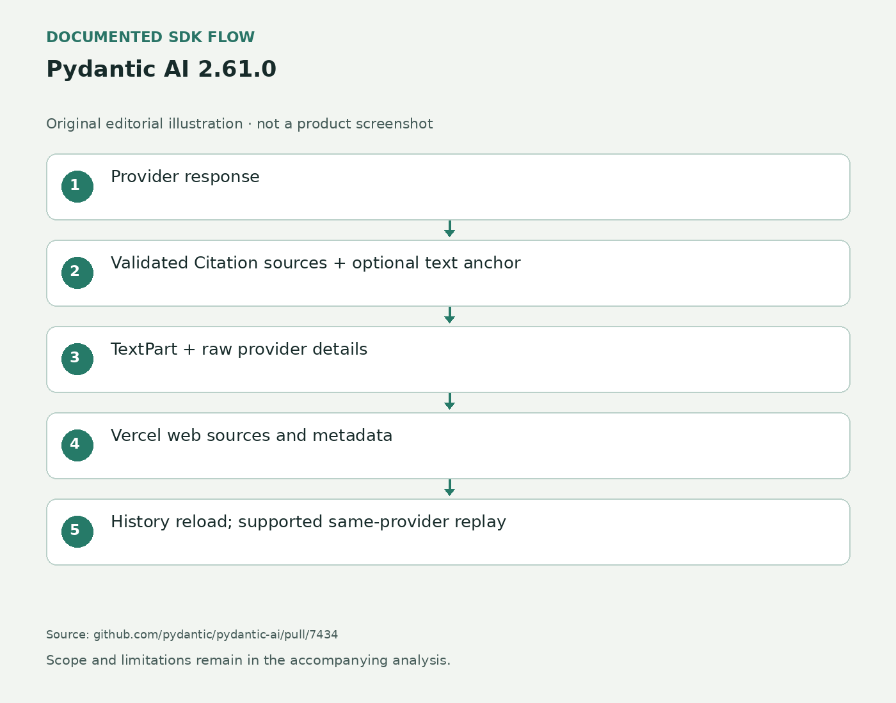
Pydantic AI 2.61.0 gives search and document-answering applications a shared citation shape linking sources to spans of answer text.
Adapters validate positions and retain provider details. The Vercel frontend lists cited web pages and carries citation metadata back with conversation history.
Applications need less provider-specific parsing, although citations can arrive after their text. The completed response is the reliable place to collect them. Original provider fields remain available, and merged text parts require shifted citation anchors.
Document citations do not automatically become web-source entries, AG-UI still drops citations, and structured outputs or forced tools have additional restrictions.
Product perspective
Unverifiable positions remain unanchored. A normalized format does not prove that a source supports the answer or independently validate the model’s claims.
AI PRODUCT DAILY / 2026-10-25Developer-tool update · 2026-10-22T17:05:37Z · 3-day / see date limits
Agent Framework makes session ownership explicit and preserves queued approvals
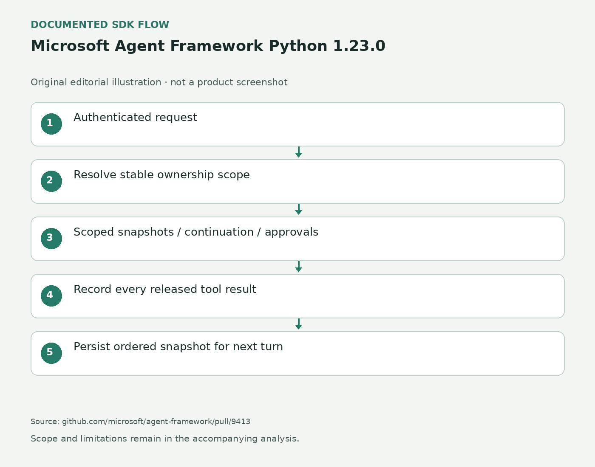
Agent Framework Python 1.23.0 requires shared agent applications to declare an authorization scope, or explicitly choose single-user mode, when registering AG-UI endpoints.
Authenticated requests resolve a stable scope before accessing snapshots, sessions, continuations or approval state. A client-owned thread ID is not an identity boundary.
Results from separately submitted approvals are retained in persisted snapshots in call order, avoiding incomplete history when the next turn begins.
A lost caller-owned MCP connection now asks for a replacement instead of retrying the same ended object. Framework-owned connections retain their recovery path. Single-user scopes last for one registration; continuity across restarts needs an explicit resolver.
Product perspective
This SDK upgrade includes breaking changes. Single-user convenience is unsuitable for shared deployments and cannot define an application’s tenant policy.
AI PRODUCT DAILY / 2026-10-25Developer-tool update · 2026-10-23T14:19:24Z · 3-day / see date limits
LangGraph assigns thread priority through application policy
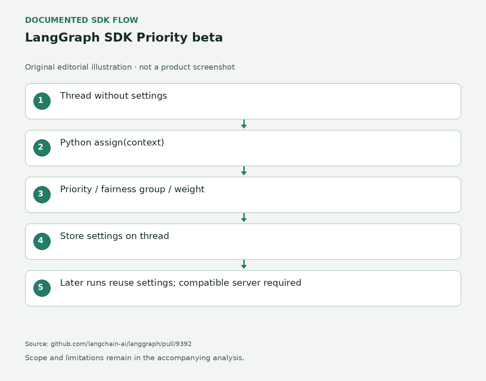
LangGraph SDK adds Priority beta for deployments assigning run priority and fairness groups to threads sharing an agent service.
On the first run of an unconfigured thread, the server calls a Python policy with user, permission and task context, then stores its settings.
Later runs reuse those settings. Priority, group and weight can be specified separately, with defaults for omitted fields. New threads can have no identifier yet, so the policy must handle that case.
Fairness groups are stored unencrypted, so use opaque identifiers. Older servers may ignore the configuration, and JavaScript projects still need a Python callback.
Product perspective
The interface supplies a policy hook, not a latency or throughput guarantee. Changed permissions do not imply automatic reclassification of existing threads.
AI PRODUCT DAILY / 2026-10-25Developer-tool update · 2026-10-24T17:57:31Z · Window observation
Vercel AI SDK parses the last final JSON without discarding earlier content
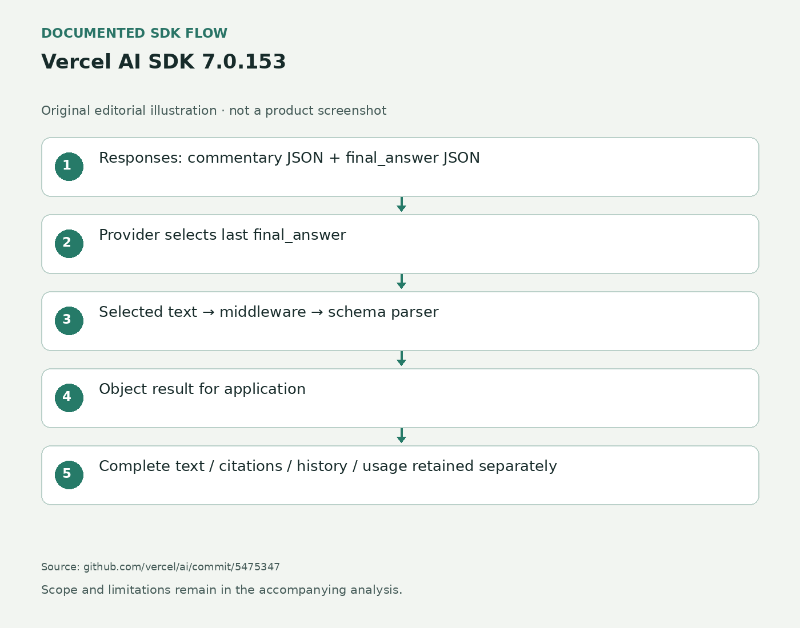
AI SDK 7.0.153 fixes non-streaming structured output when Responses models return several assistant messages containing JSON.
Developers still provide a prompt and schema. The adapter gives the parser the last final_answer instead of concatenating draft and final objects. Applications consume the parsed object while complete text can still contain multiple JSON messages.
The parsed object supports application work while complete text, annotations, message history and token usage remain available to explain the actual response.
The change covers generateText, generateObject and related JSON middleware. Streaming is unchanged, so the fix cannot be generalized to every output path.
Product perspective
It can avoid an unnecessary formatting retry, not guarantee correct field values. Parsing full text manually can still encounter several objects.
AI PRODUCT DAILY / 2026-10-25Paper / research prototype · 2026-10-22T07:56:10Z · 7-day review
HimmBO screens styles before spending generations on adapter mixtures
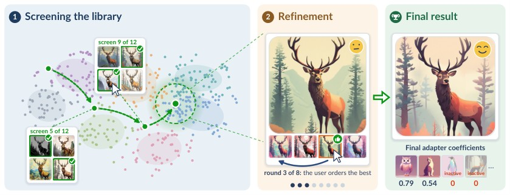
HimmBO studies image-choice interaction for creators who do not know which LoRA adapters or style description to start with.
People select preferred gallery images, then rank newly generated mixtures. The output includes selected adapters and their coefficients.
Style features transfer feedback to similar candidates. Screening retains several promising directions; refinement searches eight adapters.
Main comparisons use simulated preferences, 24 targets and five seeds. The 64-generation session budget excludes advance gallery preparation. The default session uses twelve screening rounds followed by eight refinement rounds; initial gallery construction still needs computation.
Product perspective
Real preferences can drift, and refinement cannot recover discarded adapters. The paper promises a future release of research materials. Library preparation remains additional work.
AI PRODUCT DAILY / 2026-10-25Paper / research prototype · 2026-10-20T14:32:52Z · 7-day review
GALA uses object geometry to place things inside and beneath furniture
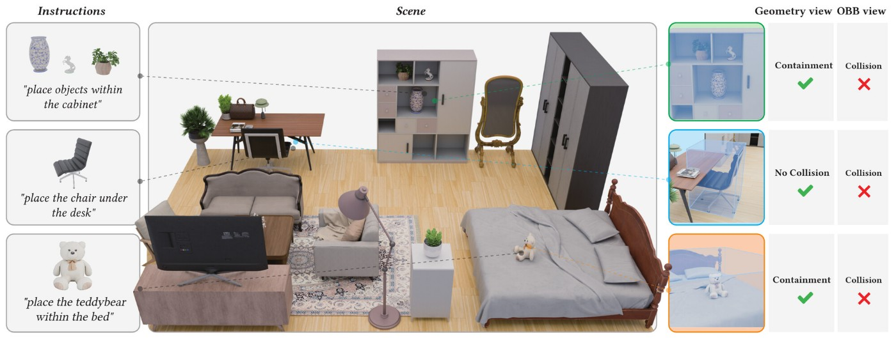
GALA takes room boundaries, existing objects, a target object’s point cloud and a placement instruction, then predicts position and orientation.
Books inside cabinets and chairs beneath tables require knowledge of internal space that a bounding box cannot represent. The result remains an editable object pose, preserving each supplied asset rather than flattening the room into an image.
A 0.7B language model uses point-cloud features. A surrounding agent plans objects, checks collisions, floating and relationships, and retries placements.
Reported instruction validity is 78.59% for single-object insertion, not whole-room success; some compared methods lack instruction input.
Product perspective
The relation vocabulary is bounded, unfamiliar containers remain difficult, and errors can accumulate. Complete code and data availability remains unconfirmed.
AI PRODUCT DAILY / 2026-10-25Paper / research prototype · 2026-10-20T18:47:26Z · 7-day review
WorldStream builds ahead of the player and remembers edited places
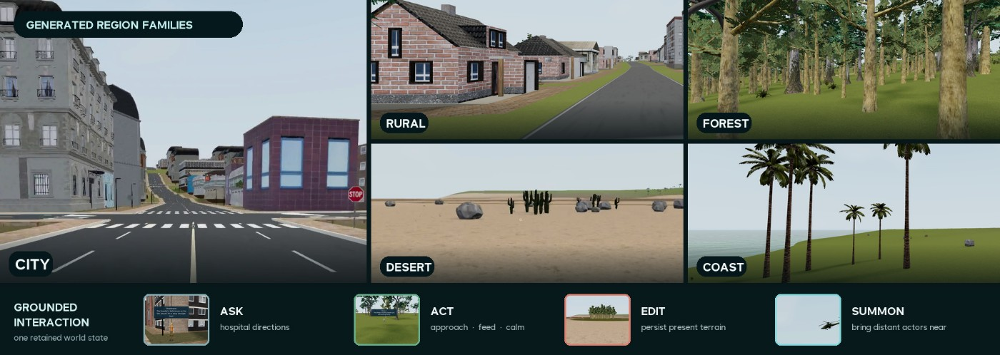
WorldStream connects movement and language requests to a continuously expanding 3D environment for interactive-world researchers. The current prototype renders low-poly scenes in a Three.js-based WebGL runtime, including cities, forests and coastlines.
People can query places, direct nearby characters, edit current terrain or leave instructions for unexplored regions. A planner chooses actions; local controllers handle movement and collision.
Regional and tile planners organize roads and settlements. Retained identities, seeds and edits allow unloaded places to be reconstructed.
The authors mapped 76 of 80 bilingual requests correctly against fixed world facts; this is not a full-play reliability measure.
Product perspective
Its asset vocabulary and controllers are bounded. Long-term storage and off-screen simulation remain open; this is a seven-day lookback.
AI PRODUCT DAILY / 2026-10-25Paper / research prototype · 2026-10-21T16:57:34Z · 7-day review
RLMuscle derives muscle activation from a reference motion clip
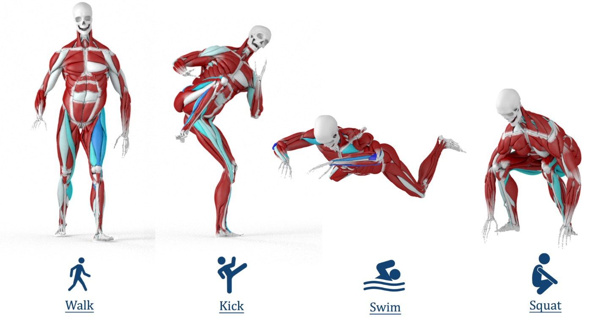
RLMuscle turns reference motion and musculoskeletal assets into volumetric character animation, reducing manual work on individual muscle-activation curves.
Reinforcement learning finds activations in a simplified one-dimensional model, then transfers motion and activation to volumetric muscles using the same force law. Both activation and skeletal motion are retained.
A GPU solver combines geometric multigrid, fiber constraints and muscle–bone collision handling. Demonstrations include walking, kicking, swimming and squatting.
The authors report 18 ms per simulated frame on an RTX 4090, or 32 ms with USD export—not training time or complete game performance.
Product perspective
Asset preparation and mapping remain necessary, and slender muscles are harder to solve. This is animation research, not a sensing or medical product.
AI PRODUCT DAILY / 2026-10-25Paper / research prototype · 2026-10-22T06:58:46Z · 7-day review
TutorCaseBench checks how AI responds when students resist or disengage
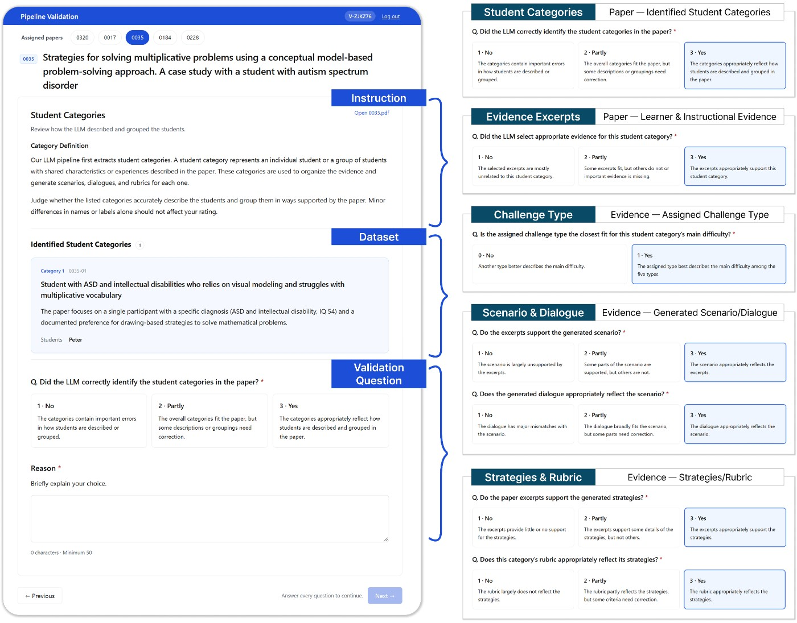
TutorCaseBench gives tutoring models dialogues involving resistance, disengagement or distress and asks for a next response or longer-term plan.
Educational cases supply context, behavior and intervention evidence for six-turn synthetic dialogues, with the scoring guidance withheld from the responding model.
Across 923 dialogues and eleven models, the best open-ended result is 55.8% meeting at least one case criterion, not classroom success.
Observed failures include reassurance that leaves a misconception intact, excessive guidance and failing to change a problematic task. The release includes synthesized evaluation items and source metadata, rather than redistributing the original educational papers.
Product perspective
The public benchmark uses text simulations, which do not test recognition from real expressions or movements and do not replace teacher judgment.
AI PRODUCT DAILY / 2026-10-25Paper / research prototype · 2026-10-22T16:57:01Z · 3-day / see date limits
Contestable Agents lets engineers challenge evidence before classifying a field
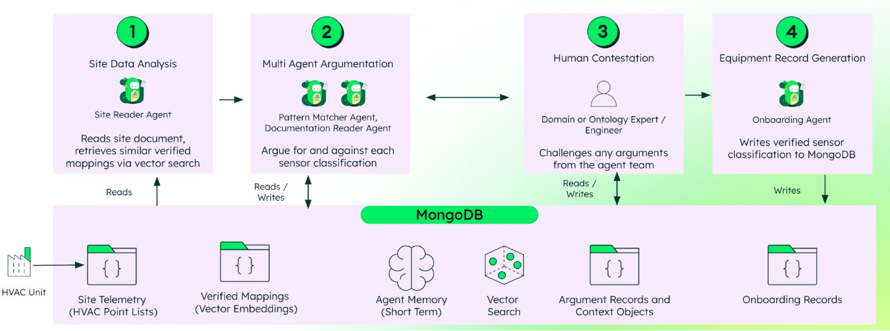
This research prototype helps equipment-data stewards classify abbreviated fields using point names, manuals and prior decisions.
Specialist agents propose cited arguments. A steward can accept, reject, modify or add them before the scores are recomputed.
A synthetic HVAC example corrects a name-based temperature-sensor classification using its documented physical position and records the intervention.
Scores are not calibrated probabilities, and repeated evidence can gain weight through multiple arguments. The reference implementation runs the full workflow on one point. Normalized values can look more confident than the underlying margins; the paper explicitly warns against reading them as probabilities.
Product perspective
Append-only history, precedent writeback and triage remain proposals rather than a complete delivered governance system.
AI PRODUCT DAILY / 2026-10-25Paper / research prototype · 2026-10-18T20:01:59Z · 7-day review
A gaze-aware assistant can carry an old misinterpretation into its next alert
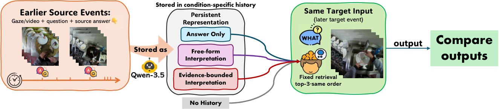
This study tests how a gaze-aware video assistant stores earlier events: a direct answer, a fluent interpretation, or separate observations, inferences, uncertainty and temporal scope.
Later questions receive the same three retrieved events in the same order, isolating how representation affects recall, predictions and alerts.
Fluent interpretation amplifies both correct and incorrect history. Separating evidence status reduces harmful answer changes in the benchmark. The experiment changes stored text, rather than the underlying camera or eye-tracking hardware.
Here, harmful means a correct model answer becoming incorrect, not measured user harm. Some tasks still perform better without history.
Product perspective
The result informs memory design for assistants; it establishes neither new hardware availability nor long-term wearer experience.
AI PRODUCT DAILY / 2026-10-25
Trace sources and visuals by project
- 01 Kept 1.9.9
- 02 myPip
- 03 sideOS 0.9.8
- 04 Bloblings 1.0.27
- 05 AgentValley 0.3
- 06 红熊AI 笔记熊 / NoteBear
- 07 HomeSurvey.ai onsite glasses survey
- 08 Microduck
- 09 Axon Body 5 / Pro
- 10 Digit 5
- 11 Gemini / Google Sites
- 12 Basedash scheduled CSV exports
- 13 Dify 1.18.0
- 14 Kimi K3.1 Pro API
- 15 capy-flash 0.7.4–0.7.5
- 16 Google ADK Python 2.13.0
- 17 Pydantic AI 2.61.0
- 18 Microsoft Agent Framework Python 1.23.0
- 19 LangGraph SDK Priority beta
- 20 Vercel AI SDK 7.0.153
- 21 HimmBO
- 22 GALA
- 23 WorldStream
- 24 RLMuscle
- 25 TutorCaseBench
- 26 Contestable Agents
- 27 When Interpretations Persist